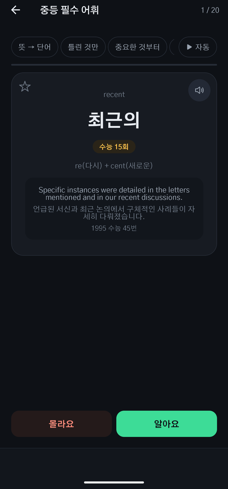
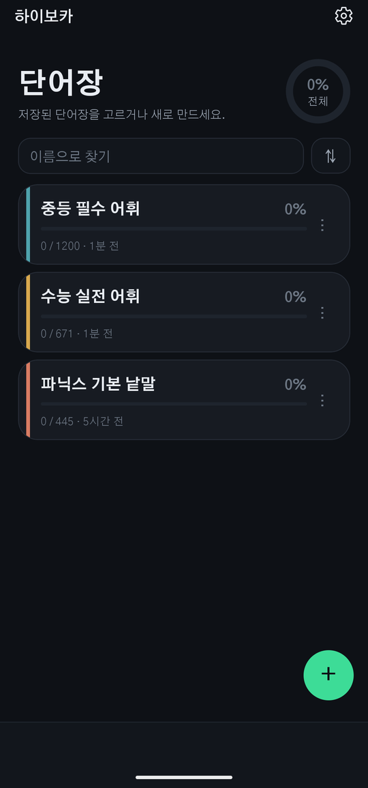
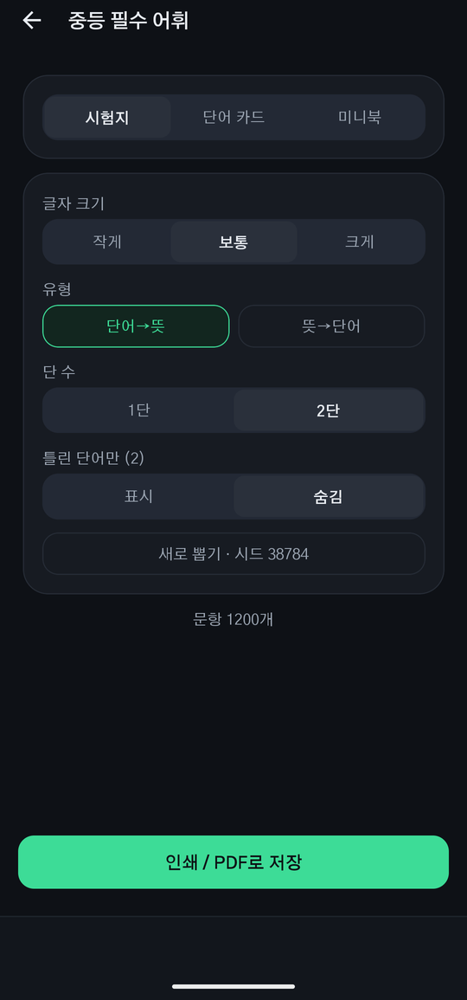

단어를 모으고, 외우고,
종이로 뽑습니다.
외울 단어를 손으로 옮겨 적고, 뜻을 하나하나 찾고, 시험지는 따로 만들던 일을 줄이려고 만들었습니다. 28,000 낱말 영한사전이 앱 안에 있어 인터넷 없이 씁니다.
구글 플레이에서 받기 회원 가입 없음 · 안드로이드
무엇을 하나
단어장을 만드는 일부터 시험지를 뽑는 일까지, 한 앱 안에서 끝납니다.
만들기
네 가지 길
사진을 찍어 낱말만 골라 내거나, 직접 입력하거나, CSV 를 불러오거나, 미리 담긴 교육부·수능 어휘 목록에서 고릅니다.
사전
28,000 낱말이 앱 안에
뜻과 품사, 그 낱말이 쓰인 예문과 해석, 수능·모의고사에 몇 번 나왔는지, 어근으로 묶어 보기까지. 인터넷에 안 물어봅니다.
외우기
카드 · 퀴즈 · 받아쓰기
암기 카드로 훑고, 네 개 중 고르는 퀴즈로 확인하고, 철자를 쳐 보는 받아쓰기로 눈으로만 외운 낱말을 걸러 냅니다.
인쇄
시험지 · 단어 카드 · 미니북
A4 시험지는 방향과 단 수, 글자 크기를 고릅니다. 카드는 앞뒤가 맞물리게 앉히고, 미니북은 접으면 8쪽짜리 손바닥 단어책이 됩니다.
발음
읽어 주기
낱말을 소리로 들으며 외웁니다. 미국·영국 등 지역 발음을 고를 수 있습니다.
기록
기기 안에만
만든 단어장과 학습 기록은 이 폰 안에만 있습니다. 서버로 보내지 않고, 회원 가입도 없습니다.
화면
어두운 화면과 밝은 화면을 모두 씁니다. 기기 설정을 따라갑니다.


알아 두실 것
- 회원 가입이 없습니다. 이름도 이메일도 묻지 않습니다.
- 단어장은 기기 안에만 저장됩니다. 그래서 앱을 지우면 함께 사라집니다 — 중요한 자료는 CSV 로 내보내 두시기 바랍니다.
- 인터넷 없이 씁니다. 사전도 인쇄도 기기 안에서 됩니다.
- 화면 아래에 배너 광고가 있습니다.
- 사전의 뜻과 예문은 프린스턴 대학 WordNet 에서, 기출 예문은 한국교육과정평가원이 공개한 수능·모의평가 문제지에서 가져왔습니다. 이 앱은 평가원과 관련이 없습니다. 자세한 출처는 앱의 설정 → 정보 → 자료 출처와 라이선스에 적어 두었습니다.